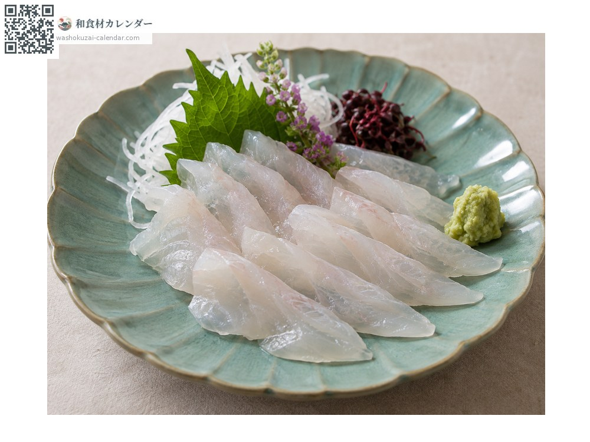
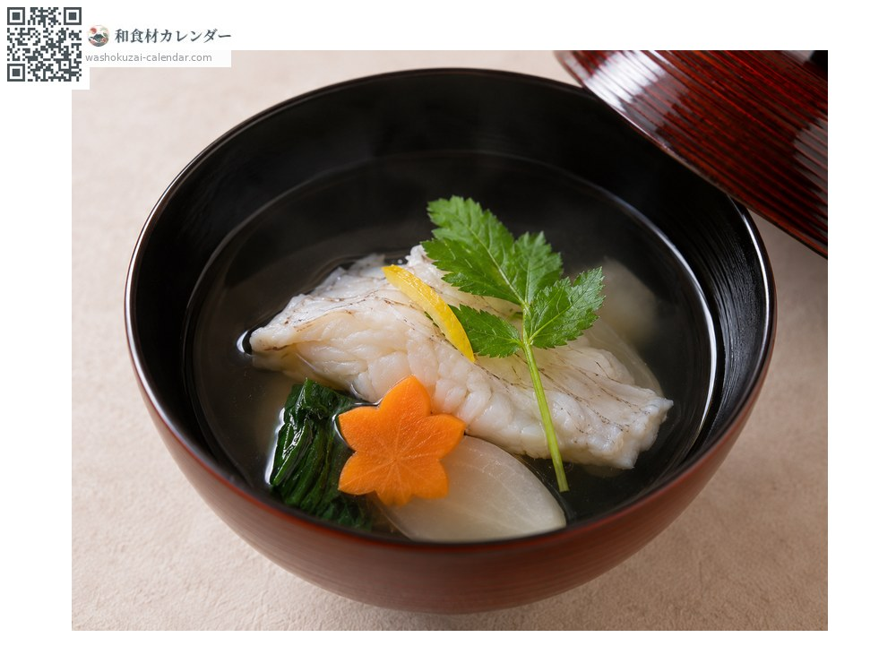
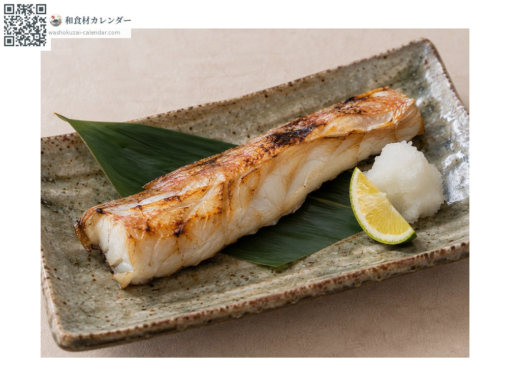
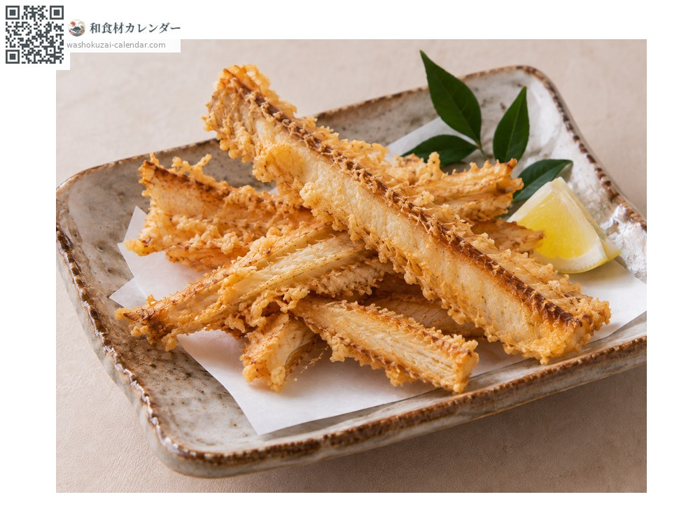

海鮮
紅馬鞭魚（矢柄）
ヤガラ やがら yagara
別名yagara、akayagara
當令時期為1月、2月、11月、12月

當令時期
1月
2月
3月
4月
5月
6月
7月
8月
9月
10月
11月
12月
當令有供應
料理方式

生魚片
高雅的白肉，甜味很強。可食部位少但味道極佳。

清湯
骨頭能熬出清澈的好湯頭，在京料理中很受重視。

鹽烤
魚肉會變得鬆軟。長長的吻部先切掉再烤。

日式炸物
把骨頭炸成脆片，香氣十足。
挑選方式
體色鮮豔朱紅、魚身緊實。眼睛清澈。
保存方式
取出內臟後冷藏。肉質緊實，可放兩到三天。
主要產地
小知識
分為紅馬鞭魚與藍馬鞭魚，食用的幾乎都是紅色那種。細長的身體與長吻是其特徵，身體大半是頭與尾，可食部位少，但因味道高雅而被視為高級魚。